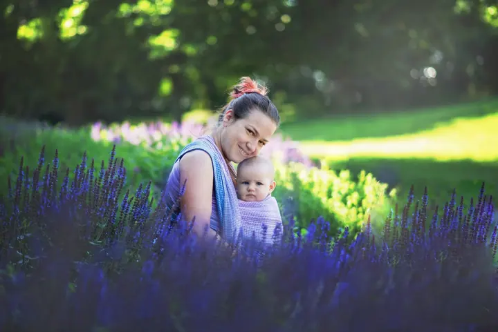
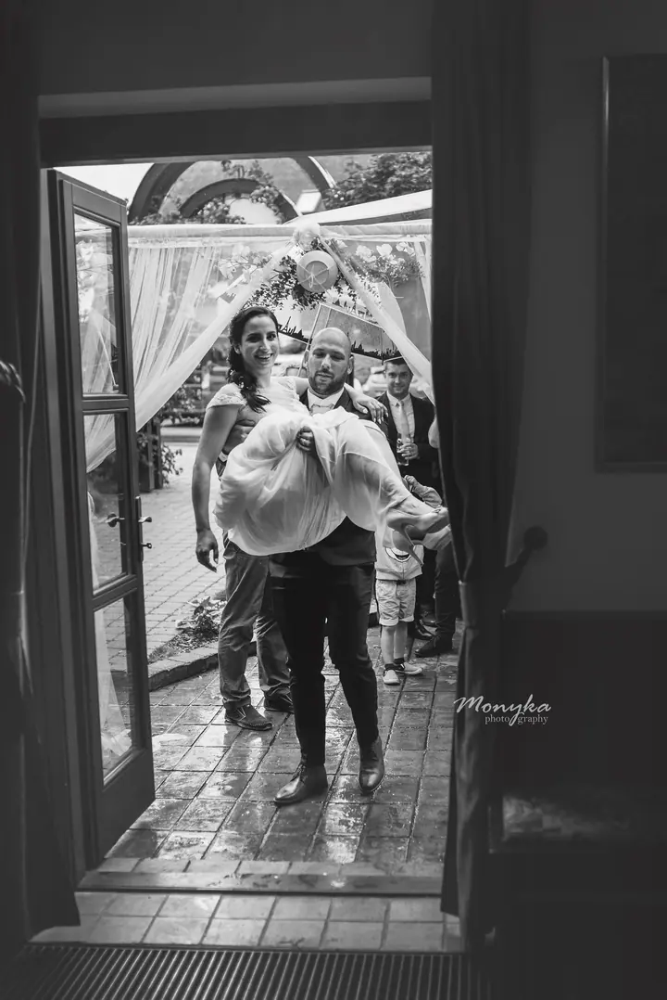

jedna
Dětské a rodinné focení
Rodiny a děti fotím převážně v přírodě, focení trvá zhruba 40 minut. Nejde nám o strojené pózování a vynucené úsměvy, ale o momentky a uvolněnou atmosféru.


Jmenuji se Monika Vašková a jsem rodinná fotografka z okolí Hořovic, Berounska a Prahy. Nejradši fotím děti a rodiny v přírodě, ale ráda vás doprovodím i těhotenstvím, prvními dny s miminkem a svatbou.
Více o mně
Co fotím
jedna
Rodiny a děti fotím převážně v přírodě, focení trvá zhruba 40 minut. Nejde nám o strojené pózování a vynucené úsměvy, ale o momentky a uvolněnou atmosféru.
dvě
Těhotenské fotky fotím v přírodě, po domluvě i v ateliéru. Na focení si u mě můžete zapůjčit těhotenské šaty.
tři
Miminka fotím v pohodlí vašeho domova, přirozeně i stylizovaně s rekvizitami, které vám dovezu až domů. V létě nabízím také newborn focení venku v přírodě.
Svatby fotím ve Středočeském kraji a v Praze. Ráda nafotím menší svatbu do 15 lidí i klasický celý den.
Na focení je dítě šéfem, ne foťák.

Za objektivem
Fotím pod značkou Monyka Photography a specializuji se především na dětské a rodinné focení v přírodě. Kromě toho nabízím těhotenské focení, focení miminek, narozeninové focení, rodinné oslavy a svatby.
Na focení se nic nehraje. Nejde nám o strojené pózování a vynucené úsměvy do foťáku, ale o momentky a uvolněnou atmosféru. Celé focení se vždy přizpůsobí věku dítěte, protože právě ono tu určuje tempo.
Fotím na trase Plzeň, Hořovice, Beroun a Praha. Přes týden mě najdete hlavně v okolí Hořovic, Berouna a Hudlic, o víkendech fotím v Praze v Hostivařském lesoparku nebo ve Stromovce. Od ledna 2026 fotím také v Lightview ateliéru v Hýskově a po domluvě dojedu i dál.
Monika
Napište mi e-mail nebo zprávu na Facebook. Společně vybereme typ focení, místo a termín, který bude vyhovovat vám i dětem.
Rodinné a těhotenské focení trvá zhruba 40 minut. Fotíme v klidu a v tempu, které zvládnou i ti nejmenší.
Pošlu vám náhledy a vy si do 7 pracovních dnů vyberete své oblíbené. Ve standardním balíčku je 10 fotek v digitální podobě, každá další stojí 180 Kč.
Po výběru a zaplacení fotky upravím a pošlu vám je v plné kvalitě přes Úschovnu. Většinou je máte do 3 týdnů, nejpozději do 6 týdnů.
Portfolio
Fotografie jsou ilustrační
Otázky
Přes týden v okolí Hořovic, Berouna a Hudlic, o víkendech v Praze v Hostivařském lesoparku nebo ve Stromovce. Po domluvě můžeme fotit kdekoliv, za focení mimo moje lokality si účtuji příplatek od 200 Kč.
Standardní rodinné focení venku stojí 2 750 Kč a obsahuje 10 fotek. Pokud vám stačí méně, je tu minifocení s 5 fotkami za 1 950 Kč.
To vůbec nevadí. Na pózování a úsměvy na povel nehraju, focení přizpůsobím věku i náladě dítěte a fotím hlavně přirozené momentky.
Ano, od ledna 2026 fotím v Lightview ateliéru v Hýskově. Fotím tam rodiny, děti, miminka, těhotenské i narozeninové focení, cena začíná na 2 950 Kč.